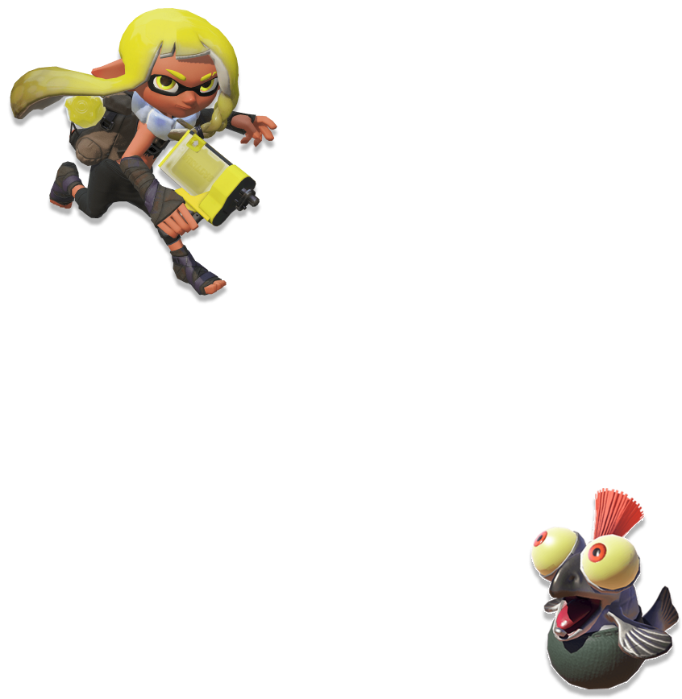

GAMEPLAY
GEAR
SALMON RUN
STORY MODE
Octrarians in the Crater?!
Join the new Squidbeak Splatoon and fight your way through the Octarian army to save the Great Zapfish. Storymode is a great way to get aquainted with the games controls and familiarize yourself with the history of this inky world. Collect power eggs, level up your Hero Gear and search for sunken scrolls to uncover every secret and save the world!
